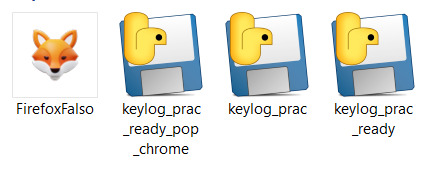
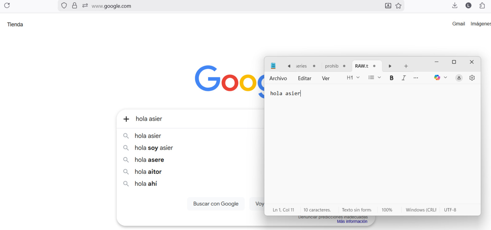

1. Evidencia
Imagen ejecutable infectado

2. Análisis
Preguntas respuestas-
Pregunta: ¿Qué señales podrían indicar que un ejecutable aparentemente legítimo es sospechoso?
Respuesta: Ubicación inusual (carpeta temporal o usuario en vez de Program Files). Solicita permisos elevados sin justificación. etc...
-
Pregunta: ¿Qué medidas técnicas pueden implementar las organizaciones para prevenir la ejecución de
software no autorizado?
Respuesta: Restricción de privilegios, Antivirus, Control de dispositivos USB.
-
Pregunta: ¿Qué papel juega la ingeniería social en este tipo de ataques?
Respuesta: Pueden engañarte para poner tu contraseña en una pagina web con un keylogger.
-
Pregunta: ¿Por qué el acceso físico a un equipo incrementa drásticamente el riesgo de compromiso?
Respuesta: Tienes muchas mas opciones de entrada, por ejemplo un un Rubber Ducky que puede emular ser un teclado y raton y controlar tu PC por completo.
3. Valoración
Reflexión utilidad y dificultad-
Evaluacion de dificultad:
Respuesta: Al tener que asegurar que todas las rutas estan bien y los archivos estan en su sitio tardas un poco en completar la tarea, pero no es dificil.